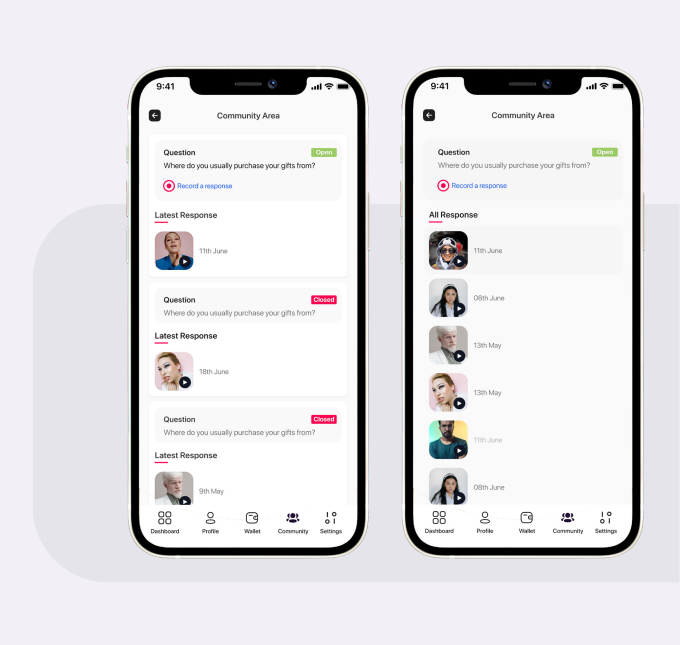
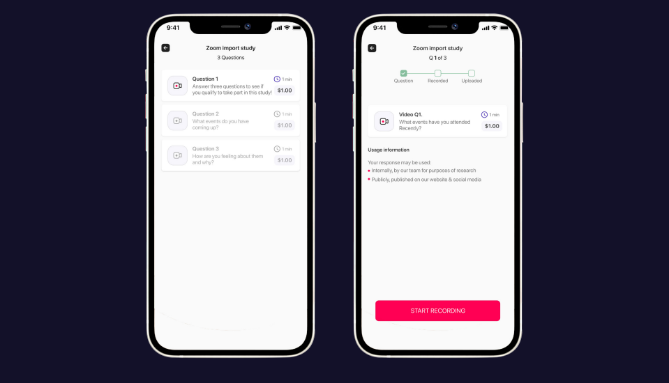
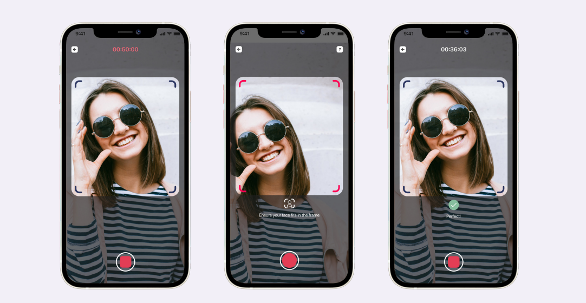
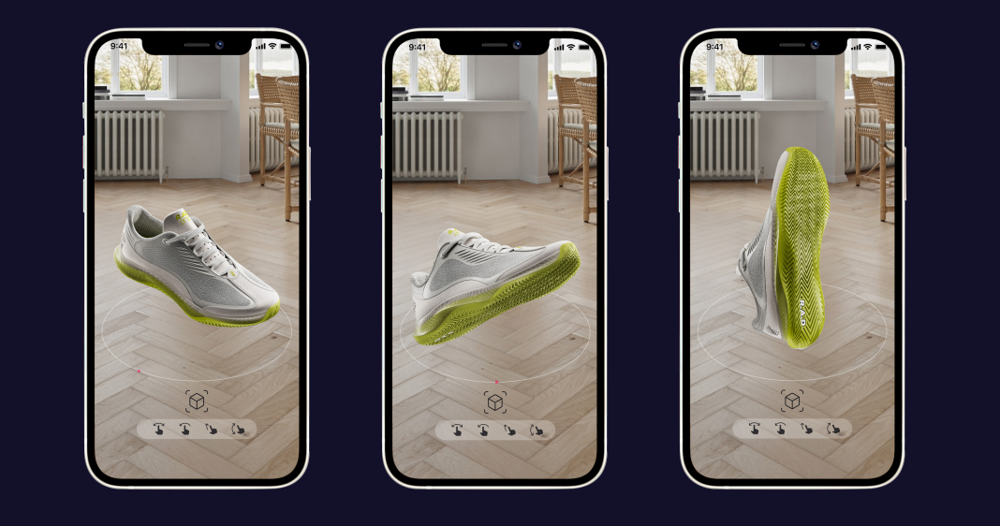
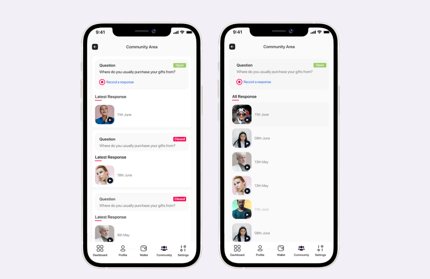
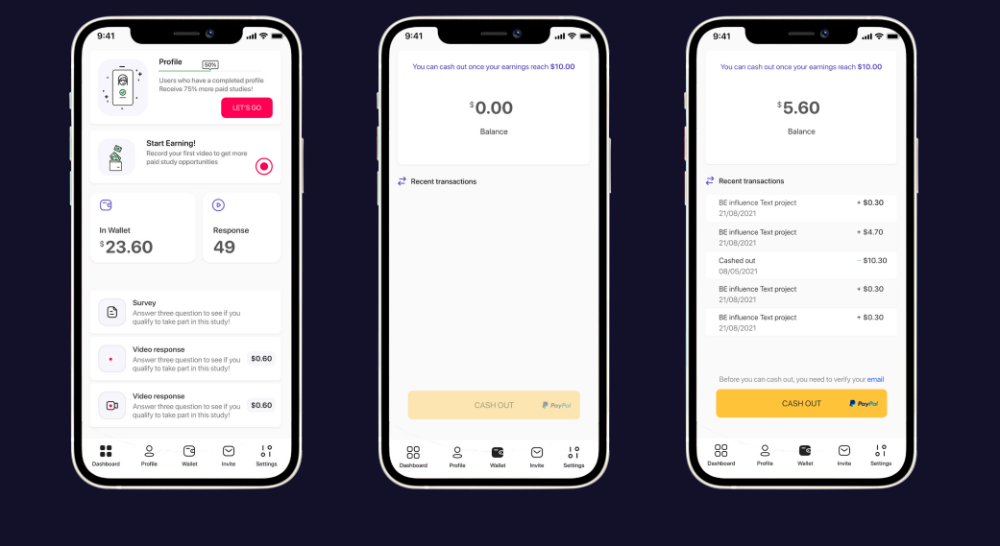
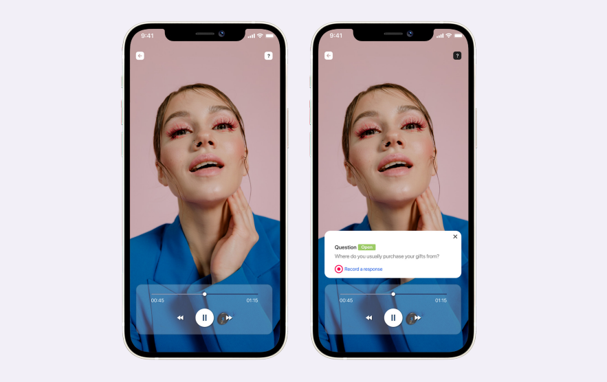

01 / Context
Turn casual video behaviour into useful research participation.
Influence allowed people to take video surveys for cash and be heard by brands through recorded feedback. The product already had a compelling exchange: users could earn money, while clients received richer qualitative insight.
The design challenge was that participation was fragile. Users needed to understand where paid opportunities were, what each task required, how to submit acceptable video responses and how their activity translated into rewards.

02 / System mapping
Before redesigning screens, map the product system.
The first major step was mapping the end-to-end information flow of the survey app. This made the hidden complexity visible: survey discovery, eligibility, recording, moderation, rewards, cash-out and community all affected the user experience.
This was important because the problems were not isolated UI defects. They were connected system issues: a weak task model could create rejected responses, support tickets, lower participation and reduced research quality.
03 / Evidence
User feedback showed where the product was leaking trust.
Feedback from app-store reviews, Play Store reviews and Zendesk support exposed repeat pain points: lack of paid opportunities, rejected feedback videos without clear reasons, poor in-app notification experience and cash-out issues.
A heuristic review added another layer: poor system-status visibility, weak user control, inconsistent standards, error prevention as an afterthought and outdated or cluttered screens.
04 / Opportunity
Leverage the community the product already had.
The app already had engaged users who liked the idea of getting paid for video feedback. The missed opportunity was that the old experience limited their ability to find relevant tasks, understand expectations and keep participating.
The product opportunity became clear: improve information findability, increase paid participation moments and make the community more useful without undermining research quality.
05 / Flow definition
Define the critical journeys before designing the interface.
I mapped the interaction flows that mattered most: login and signup, cash-out, recording a video response, eligibility and application states. This helped the team understand dependencies and decision points before committing to interface work.
06 / Task comprehension
Group related questions so users understand the study.
Many video surveys contained multiple questions, but users struggled to identify which questions belonged to the same study. This created avoidable confusion before participation even began.
The solution was question grouping: showing relevant questions for the same study in one place, making the task model clearer and helping users understand the structure of the paid survey.

07 / Response quality
Reduce rejected responses with better recording guidance.
Users often complained that responses were rejected and they were not incentivised for their feedback. One specific moderation reason was that the participant’s head was not properly in frame.
The design introduced an on-screen frame and messaging during recording, helping users self-correct before submission and reducing avoidable rejection.

08 / More paid opportunities
Add new ways to participate and earn.
A core complaint was that there were not enough paid opportunities in the app. The product response was not only to surface more surveys, but to expand the types of paid research tasks available.
The app introduced paid Augmented Reality survey experiences, creating more opportunities for users to earn cash while giving brands richer product-testing scenarios.

09 / Community
Make participation feel less isolated.
Users believed the app prioritised active users, meaning fewer opportunities were available to everyone else. The community section created another engagement layer where users could learn, share tips and stay connected to the product.
This helped shift the app from a simple task stream to a more participatory research community.

10 / Rewards and cash-out
Clarify balance, activity and cash-out status.
Participants often contacted support about balance and cash-out issues. The problem was not only financial; it was about system status, trust and confidence.
The dashboard gave users a clearer view of their activity, up-to-date balance and transaction history, reducing uncertainty around what they had earned and what could be withdrawn.

11 / Discovery
Surface open paid studies where users already engage.
In addition to the survey stream, paid video surveys were published in the community section. Available opportunities were labelled “OPEN”, allowing users to apply directly from a place where they were already browsing and participating.

12 / Takeaway
Small system changes created a stronger participation loop.
The work improved the product by listening closely to user feedback, identifying practical low-hanging opportunities and applying systems thinking across paid opportunities, task structure, recording guidance, community and rewards.
The result was a clearer participation model: users could find opportunities, understand what was expected, submit better responses, track rewards and stay engaged with the community.